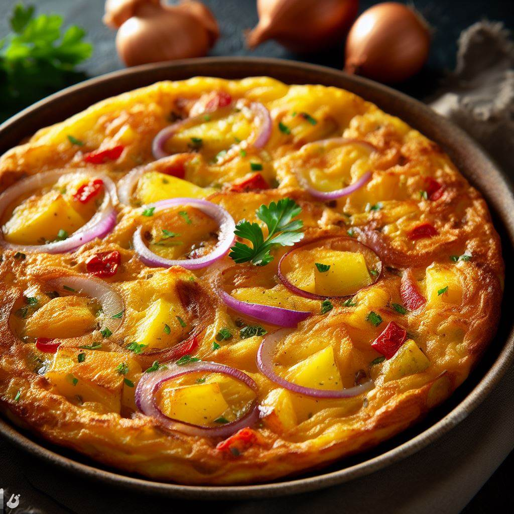

Tortilla de Patata

Este manjar consta de muy pocos ingredientes, pero es
importante que la patata sea del origen que sea, que se vuelva tierna en
la fritura,
yo he puesto patata nueva, que los huevos sean de calidad, un buen aceite
de oliva y mucho cariño, todo lo que se cocina con mimo sale mejor.
Ingredientes
- 5 patatas medianas peladas unos 800 g
- 9 huevos
- 1 cebolla mediana opcional
- Aceite de oliva para freir
- Sal y pimienta
Pasos
-
Corta las patatas muy finitas y la cebolla picadita, vierte todo en una
sartén al fuego con el aceite de oliva templado, espolvorea sal y
pimienta negra.
-
Después de añadir las patatas y la cebolla, subir la temperatura de la
placa durante un minuto para que la cocción comience cuanto antes,
después de calentar el aceite durante ese minuto,
bajar el fuego nuevamente para que las patatas se confiten suavemente a
baja temperatura.
-
Tapamos la sartén y dejamos entre 4 y 5 minutos de cocción, destapamos,
revolvemos y volvemos a tapar,
aguardarmos 4 o 5 minutos para destapar y otra vez revolver, repetiremos
este ciclo hasta que las patatas estén tiernas.
-
Cocidas las patatas y la cebolla, las pasamos a un colador y dejamos
escurrir el aceite.
-
Mientras mezclamos los huevos (apenas batidos) salpimentamos, agregamos
las patatas escurridas y revolvemos.
-
Ponemos la sartén al fuego, si como en mi caso aún está mojada de
aceite, no necesitarás poner más aceite, vierte la mezcla de
patatas-huevo y cuaja a fuego medio-alto durante 3
o 4 minutos de un lado, da vuelta la tortilla con una tapa (vuelta
tortilla) o un plato y del otro lado, dejar cuajar 2 minutos. Si te
gusta más o menos hecha, varía los tiempos.
- Sirve caliente o templada.